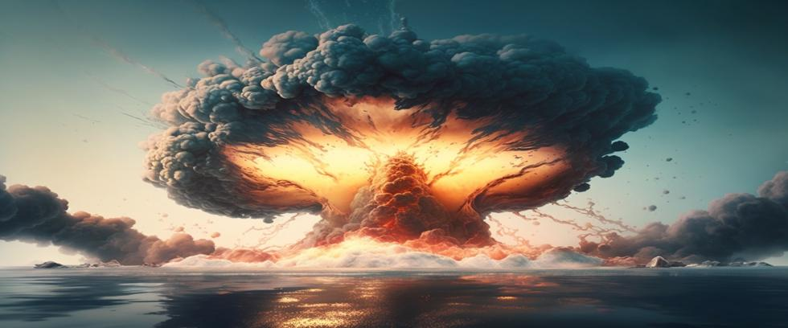

As World War II came to a close, the United States dropped atomic bombs on the Japanese cities of Hiroshima and Nagasaki.
Estimates of fatalities inflicted by those weapons are seldom accurate. Most sources maintain that fewer than 150,000 people died at Hiroshima, and perhaps 80,000 perished at Nagasaki.
But those numbers reference data compiled at the end of 1945, just months after the war ended. Today, the City of Hiroshima and the US Department of Energy both agree that the true number of fatalities in Hiroshima alone exceeded 220,000 – nearly all of them civilians.
Controversy also exists over why US President Harry Truman dropped atomic bombs on a country that was already beaten, knowing it was against the internationally accepted Geneva Conventions that established ethical standards of military conduct.
The Context of 1945
By the summer of 1945, the war in Europe was over, and Japan’s defeat in the Pacific was imminent. Its navy was shattered, its cities firebombed, and its economy lay in ruins. The US had already captured key islands like Okinawa, and naval blockades had cut off supplies to the Japanese mainland.
But as the war continued, American analysts debated ways to force Japan’s surrender. Some argued for more bombing and better blockades. Others believed the US should accept Japan’s offer to surrender if America allowed Emperor Hirohito to stay in office. America was planning to prosecute the Emperor as a war criminal, but decided he might help with public relations instead.
Hiroshima and Nagasaki
On August 6, 1945, a uranium-powered bomb named Little Boy fell on Hiroshima. Three days later, a plutonium-powered bomb named Fat Man struck Nagasaki.
The devastation was beyond anything humanity had ever seen:
- City centers were flattened instantly.
- Outlying areas experienced significant structural damage, with survivors suffering severe burns, radiation sickness, and elevated risks of cancers that might not manifest for decades.
- Generations were scarred by the psychological impacts they endured.
Military Opposition
Seldom mentioned in historical accounts is how all of America’s top military commanders spoke out against using atomic bombs. Afterward, of course, since they were not told about it before.
The following are some of the officers who voiced opposition to nuking Japan. Although the list is far from complete, the calibre of names on it shows that Truman’s decision to use atomic bombs was essentially a political one.
- Admiral William D. Leahy, President Truman’s Chief of Staff. Leahy was aghast that nukes were used. He equated the bombing of Hiroshima and Nagasaki with “...acts of barbarism committed during the Dark Ages.”
- Admiral Chester W. Nimitz, Commander of the Pacific Fleet. Nimitz emphatically claimed that atomic bombs, “…had nothing to do with defeating Japan.”
- Admiral Frank Wagner, Deputy Chief of Naval Air Operations. Wagner stated that, “...no targets were left in Japan worth the effort to destroy.”
- Admiral Arthur Radford, later Chairman of the Joint Chiefs of Staff. Radford agreed that, “...no targets remained in Japan worth wasting fuel on.”
- General Henry Arnold, Commander of the US Army Air Forces. Arnold said that Japan had been beaten and, “Dropping atomic bombs on civilians was a tragic mistake.”
- Admiral William F. Halsey, Commander of the Third Fleet. Halsey declared that nuking civilians was “immoral and disgusting.” He believed the primary motive for doing so was “...showing off the powerful new weapon the scientists invented.”
- General Curtis LeMay, Commander of the 21st Bomber Command. General LeMay, the youngest four-star general since Ulysses S. Grant, said, “...atomic bombs had nothing to do with ending the war in Japan.”
General Douglas MacArthur; Army Chief of Staff, General George C.Marshall; Commander of the US Army Strategic Air Forces in Europe, General Carl Spaatz; General Frederick Anderson; General Claire Chennault; Secretary of the Navy, James V. Forrestal; General Bonner Fellers; Commander in Chief of the US Fleet, Admiral Ernest J. King; General Carter Clarke; General Ira Eaker; Rear Admiral L. Lewis Strauss…
This list of dissenters could fill pages, but it sufficiently illustrates the point: America’s military commanders thought, to a man, that invading Japan was unnecessary, and nuking civilians was contrary to long-standing American values.
Those were not the opinions of pacifists, but statements from the highest ranks of America’s military. And they were right. Japan had already sued for peace, and if Truman had changed his mind about prosecuting the Emperor a few days earlier than he did, nuclear weapons would not have been used.
Alternative Options
Several alternatives were on the table in 1945:
- Maintain Blockades and Conventional Bombing: Japan’s economy was collapsing. Food shortages were widespread and growing. Military leaders believed the domestic situation alone would soon force a surrender.
- Demonstrating the Bomb: Most scientists, and some intelligence analysts, believed that detonating an atomic bomb in a remote area would give fair warning to the Japanese without killing civilians.
- Conditions of Surrender: Japan’s final remaining condition for surrender was preserving the Emperor’s role – a condition that was later granted. Accepting this before Hiroshima and Nagasaki were bombed would have ended the war without thousands of dead children.
But in the end, none of those were pursued.
Truman’s Reasoning
President Truman justified his decision by claiming it saved the lives of American soldiers who would have died while invading the Japanese homeland.
But Truman never mentioned how Japan lay hopelessly beaten before America’s military, or how he rejected Japan’s remaining condition for surrender until after he bombed Hiroshima and Nagasaki.
It’s true that the estimated casualties for a homeland invasion were high, but modern historians now question whether those numbers were inflated to justify the bombings after the fact. Either way, several considerations led to Truman’s decision, as listed below in their order of importance.
- A Show of Strength to the Soviet Union: By August 1945, the US was already planning for likely power struggles in the postwar world. The Soviet Union was high on the list of potential adversaries. By dropping the bomb almost on his doorstep, Truman showcased America’s astonishing new power to Soviet leader Joseph Stalin just as he was about to enter the war in Japan.
- Speeding Surrender: Truman and his advisors hoped that a sudden, shocking blow would force Japan to surrender quickly and unconditionally, bypassing drawn-out negotiations during which time more people would die and the Soviets might seize Japanese territory.
- Justification of Costs: The Manhattan Project cost over $2 billion – about $35 billion today, and in a much smaller economy. The pressure Truman felt to justify the enormous expense of bombing Japan is seldom appreciated. But the excuse, “We spent billions on a bomb we decided not to use,” would not have been popular with an angry public in 1945.
Japan declared surrender on August 15th, but historians now believe the Soviet Union’s declaration of war on August 8th was the primary reason they ended it then. The Japanese may have lost the war, but they weren’t stupid. They feared a Soviet occupation far more than an American one.
Historical Debate
The question of whether atomic bombs were necessary remains oddly contested:
- Traditional View: Truman’s decision saved lives by avoiding a costly invasion of the Japanese homeland.
- Revisionist View: Japan was already beaten, and atomic bombs were used primarily to intimidate the Soviet Union and establish US dominance.
- Middle Ground: Atomic bombs contributed to Japan’s surrender, but were not the single or decisive factor. The Soviets’ declaration of war also played a part.
But despite the controversy, the bottom line remains: President Truman chose killing civilians over allowing the Emperor to remain in place – a decision he reversed just a little too late.
The Precedent and the Arms Race
Truman’s decision also set a precedent: Nukes were the new tools of war. Once an abstract scientific concept, nuclear weapons are now the ultimate measure of national power.
The bombings sparked a nuclear arms race as well. The Soviet Union, determined to catch up, accelerated its nuclear program. In 1949, they successfully tested an atomic bomb named First Lightning. The proliferation cycle had begun.
A Dangerous New Reality
President Truman’s decision to nuke Japan was not supported by military leaders. They saw the consequences as catastrophic, not only for the people of Japan, but for people everywhere who inherited a dangerous new world.
Yet there is hope. Nuclear weapons may seem like inevitable facts of modern life, but that illusion disappears with closer inspection. Human choices ultimately built nuclear weapons—choices that can be reversed.
Lessons for Today
The atomic bombings of Hiroshima and Nagasaki mark more than just a low point in US history – they reveal how easily tragedy can strike when leadership places power and politics over people.
President Truman’s decision to nuke Japan in 1945 remains a warning for us today. Sooner or later, national leaders will face similar choices so long as nuclear weapons remain.
The Path Forward
At Our Planet Project Foundation, we believe that choosing a path forward begins with understanding the path behind. Only by identifying our mistakes can we learn from them.
It’s true that nuclear warheads on high alert remain for now, but we have the ability to correct that mistake and eliminate nuclear weapons before it’s too late. After all, there is no downside to building a safer world for our children and ourselves.